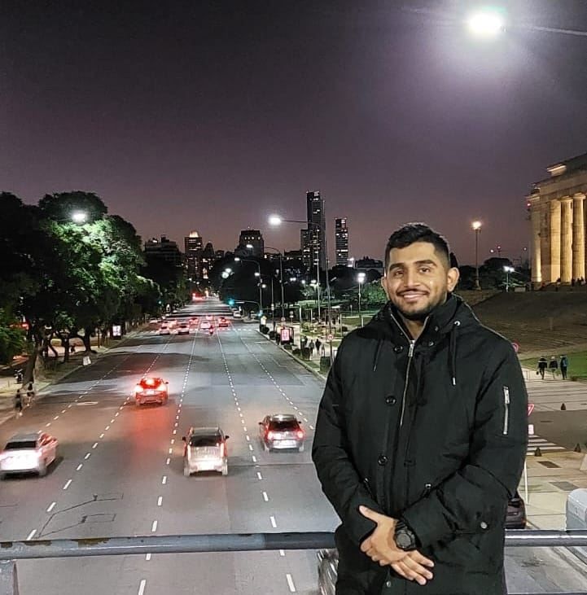

CV José Orellana

Descripción Personal
Mi nombre es José Orellana, tengo 26 años de edad.
Soy de Venezuela, pero vivo en Argentina.
Soy estudiante de Henry por la carrera de programador full stack,
mi objetivo es lograrlo para poder salir adelante con lo que me apasiona y
de la misma manera ayudar a mi familia.
Educacion
- Educacion Basica: Instituto Metropolita Adventista, Venezuela, Edo-Lara
- Educacion Segundaria: Instituto Metropolitado Adventista, Venezuela, Edo-Lara
- Educacion Universitaria: Universidad Nacional Experimental Politecnica, Antonio Jose de Sucre.
Ing Industrial(carrera no culminada) Venezuela, Edo-Lara
Experiencias Laborales
- Licoreria La Pepera: Asistente administrativo y vendedor.
- Lodeli: Asistente administrativo y Vendedor.
- Conductor Asociado en Uber: Conductor de auto propio.
Skill
- Liderazgo y gestión de equipos
- Creatividad e innovación
- Persuasión, negociación y ventas
- Capacidad de colaboración y trabajo en equipo
- Adaptabilidad y flexibilidad
- Productividad y gestión del tiempo
Hobbies
- Jugar Futbol
- Trotar
- Escuchar Musica
- Ir de paseo
Expectativas de la carrera
Estudio esta carrera primeramente por que siempre me ha gustado todo lo que tenga que ver con la tegnologia,
me gusta y tengo seguro que es el trabajo ideal para mi. mis expectativas son altas, asi que debo esforzarme cada vez mas.
Tengo la intension de seguir aprendiendo todos los dias e ir actualizandome en todo lo que tenga que ver con programacion,
me gusta el Front end y creo comenzar a trabajar en el, pero no descarto la posibilidad que logre dominar el back end.